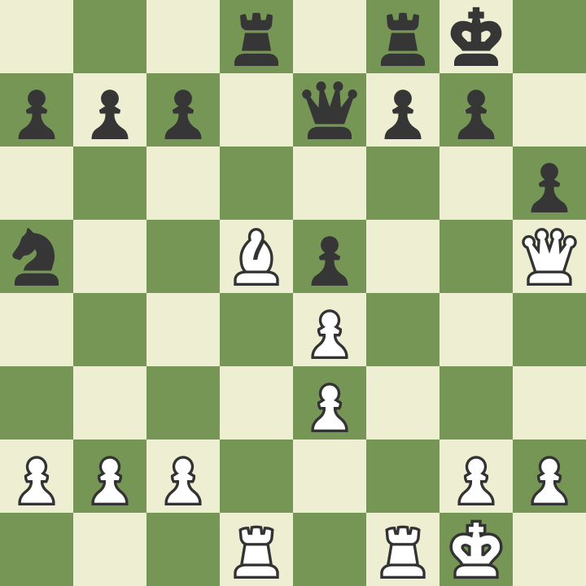
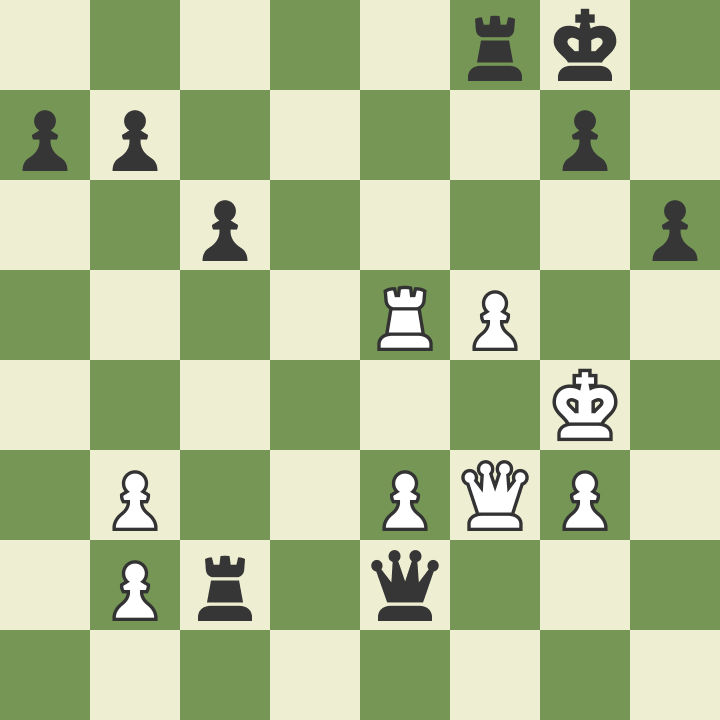
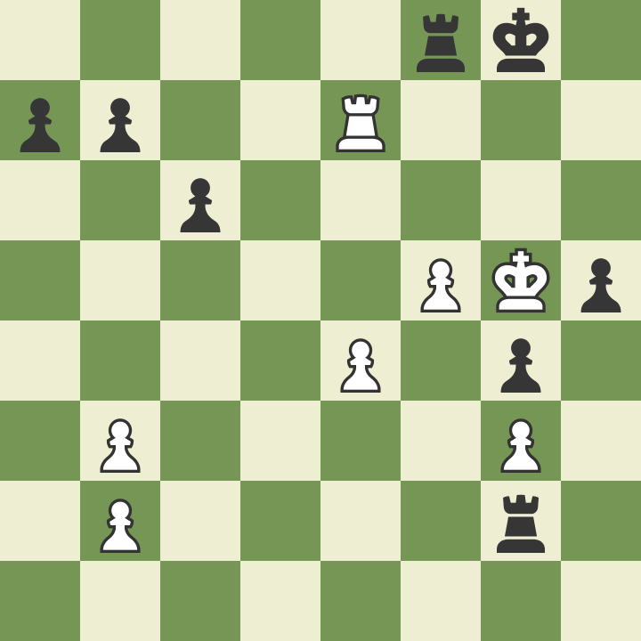
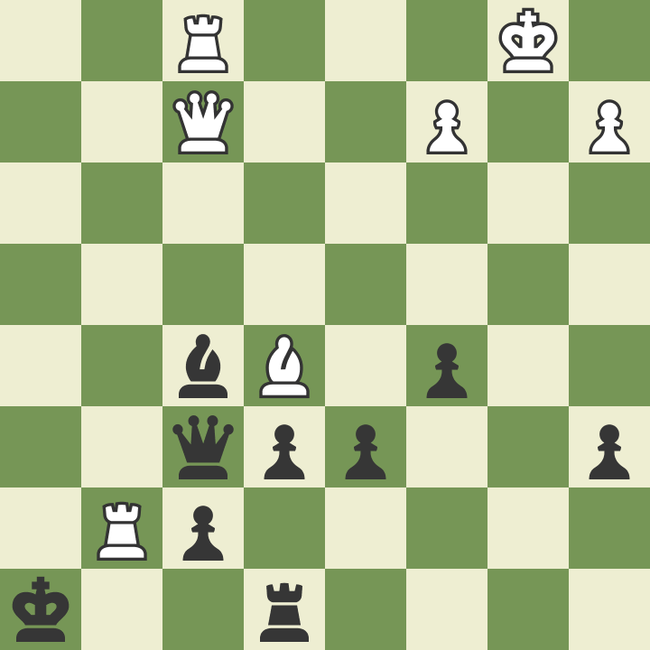
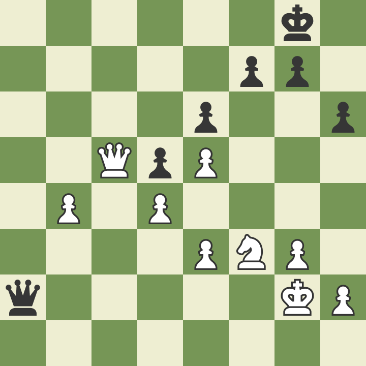
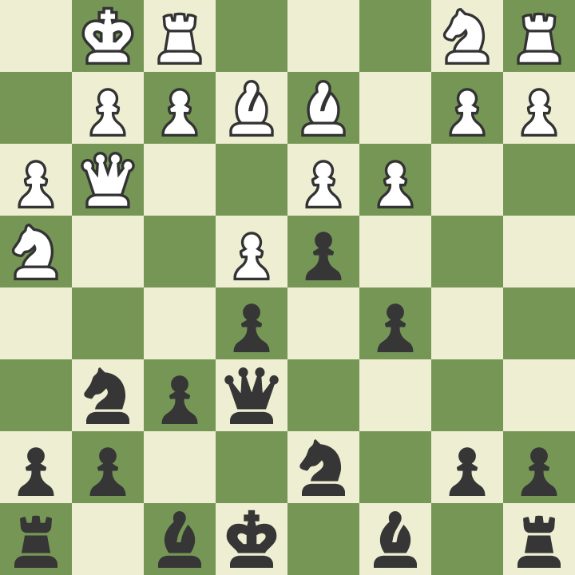
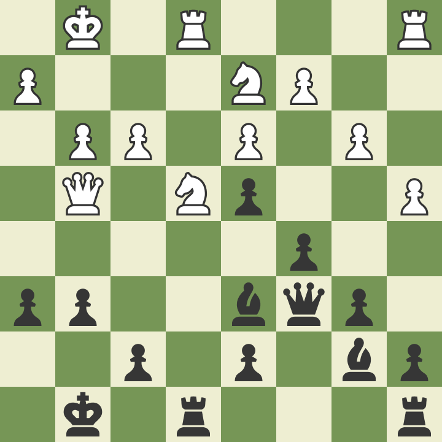
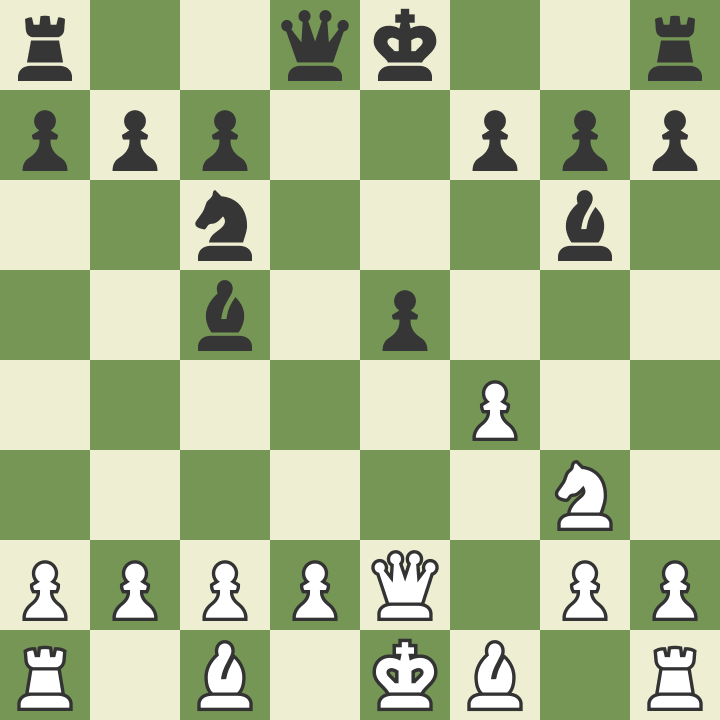
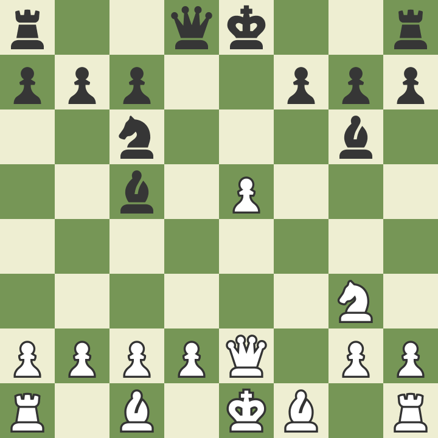

- Reviravoltas e combinação de trocas com vantagem material
- Altos e baixos em uma partida complexa
- Cabeça Quente
- Maria Bonita Robusta
- Las Nubes Reserva Personal
- Malma 2015
- Perereca do Monte
- Pinóquio do Guilhermo del Toro
- King exposure is the key to victory
- El Porvenir Amauta (2021)
- Unsuspicious of forks
- Decided to draw a won game
- Hidden tactic
- Please keep the advantage
- 365 Dias
- Let's go to the final with one horse
- Modern Love Tokyo
- 365 Dias - Hoje
- 365 Dias Finais
- A Escalada (2017)
- Keep the advantage in pawn and king final
- Não passei em uma entrevista técnica
- Volta ao Mundo em 80 Dias: Uma Aposta Muito Louca
- Ups and downs
- White move and win the game
# Reviravoltas e combinação de trocas com vantagem material [link]
Brancas jogam e ficam em vantagem material.

O jogo virou e agora negras jogam e é mate em 6. Consegue achar? Dica: o caminho mais natural acaba sendo mate em 2.

Duas torres contra uma e a engine diz que está equilibrado porque tem uma sequência de perpétuo. Consegue descobrir?

Agora tem mate em 1 das brancas (elas jogam). Que partida de reviravoltas!

Event "Live Chess" Site "Chess.com" Date "2023.02.03" White "cavaloni" Black "Abdo_Sh3biny" 1. Nf3 d5 2. e4 dxe4 3. Ng5 Nf6 4. d3 h6 5. Nxe4 Nxe4 6. dxe4 Bd7 7. Bc4 e5 8. O-O Nc6 9. Nc3 Bc5 10. Be3 Bxe3 11. fxe3 O-O 12. Qf3 Be6 13. Rad1 Qe7 14. Nd5 Bxd5 15. Bxd5 Rad8 16. Qh5 Na5 17. Rf5 (17. Rxf7 Rxf7 18. Qxf7+ Qxf7 19. Bxf7+ Kxf7 20. Rxd8) 17... c6 18. Bb3 Rxd1+ 19. Kf2 Rd2+ 20. Kf3 Nxb3 21. axb3 Rxc2 22. Rxe5 Qf6+ 23. Qf5 Qh4 24. g3 Qxh2 25. Kg4 Qe2+ 26. Qf3 f5+ 27. exf5 h5+ 28. Kf4 g5+ 29. Ke4 (29. Kxg5 Qxf3 30. Re6 Qxg3+ 31. Kh6 Qg7+ 32. Kxh5 Rh2#) 29... Qxf3+ (29... Rc4+ 30. bxc4 Qxc4#) 30. Kxf3 g4+ 31. Kf4 Rf2+ 32. Kg5 Kh7 33. Re7+ Kg8 34. e4 Rf7 35. Re8+ Rf8 36. Re7 Rg2 37. Kf4 Rxb2 38. Rxb7 Rxb3 {E de repente a casa caiu para as negras.} 39. Rxb3 Kf7 40. Rb7+ Kf6 41. Rxa7 c5 42. Rc7 Rg8 43. Rxc5 h4 44. gxh4 g3 45. Rc1 g2 46. Rg1 Kg7 47. Rxg2+ Kf6 48. Rxg8 Kf7 49. Ra8 1-0
# Altos e baixos em uma partida complexa [link]
Negras jogam e ficam ganhas, mas...

Brancas jogam e é M6. Porém...

Event "Live Chess" Site "Chess.com" Date "2023.02.09" White "oskrjalos" Black "cavaloni" 1. e4 c5 2. f4 d6 3. Qf3 Qb6 4. Nc3 g6 5. Bc4 Bg7 6. Nge2 Nf6 7. h3 O-O 8. g4 Qc6 9. f5 a6 10. d3 Nbd7 11. fxg6 Kh8 12. g5 Ne5 13. Qf2 Nfd7 14. gxh7 Nxc4 15. dxc4 Ne5 16. Nd5 Qe8 17. Nc7 Qd8 18. Nxa8 Be6 19. b3 Qxa8 20. Bb2 b5 21. O-O-O bxc4 22. bxc4 Qxe4 23. h4 Bxc4 24. Nc3 Qxh7 25. h5 Kg8 26. h6 Bh8 27. Rh3 Be6 28. Rg3 Bf5 29. Nd5 Re8 30. Rf1 e6 31. Nf6+ Bxf6 32. gxf6+ Kh8 33. Rg7 Qxh6+ 34. Kb1 Qxf6 35. Bxe5 {Negras jogam e ficam ganhas, mas...} 35... Bxc2+ {Brancas jogam e é M6. Porém...} (35... Rb8+ 36. Kc1 Qxe5) 36. Qxc2 (36. Kxc2 Qxe5 37. Rg8+ Rxg8 38. Qh4+ Kg7 39. Rg1+) 36... Qxf1+ 37. Kb2 Qb5+ 38. Qb3 Qxb3+ 39. axb3 dxe5 40. Rxf7 Kg8 41. Ra7 e4 42. Kc3 Rd8 43. Rxa6 Rd4 44. Rxe6 Kf7 45. Rc6 Rd5 46. b4 cxb4+ 47. Kxb4 e3 48. Rc1 e2 49. Re1 Re5 50. Kc4 Kf6 51. Kd4 Kf5 52. Kd3 Kf4 53. Kc3 Kf3 54. Kd2 1-0
# Cabeça Quente
É uma distopia chupinhada da epidemia de COVID feita por um millennial que se diverte colocando referências de um livro que ele leu chamado 1984, mas a trama precisa ser explicada todo tempo em diálogos expositivos e as reviravoltas entretém como um passatempo. Nós nunca adentramos de fato neste universo poetizado que relaciona os disparates dos infectados por um vírus semântico e o grito da liberdade dos revolucionários ou dos que sonham pelo fim dos tempos sombrios. O uso das palavras como a via de transmissão é uma ideia que é aproveitada para contar um pouco sobre a novilíngua, com a proibição de termos arcaicos junto de frases sem sentido. Uma brincadeira inocente em um mundo cinza claro. A Julia e o Wilson da série são réplicas em fisionomia, mas não em alma. Esta é uma versão pobre, enlatada, da distopia orwelliana, mais que Brazil, o Filme. Mas não ofende. Apenas precisando suportar as cenas que revelam se tratar de uma criação menor, menos trabalhada, mais preguiçosa. Não chega a ser ruim. Outros millennials devem curtir mais.
# Maria Bonita Robusta
A Mitiko achou um café 100% robusta de Minas com venda direto do produtor, em grãos, descafeinado, e é mais barato que café de mercado. Este achado é para poucos. Só o frete é caro. Encomendamos um quilo.
A qualidade é boa. Bem pouco oleoso, fácil de moer. O sabor não é acentuado. Lembra café mineiro, mas um pouco diferente. Será o tipo de grão diferente? Vale a pena a experiência.
Eu ainda estava experimentando com maior tempo de infusão, moagem mais fina, etc. Gelado ele fica muito bom. Mas quente parece que falta corpo. Meu último experimento (2023-02-18) foi com 25g de café e o resultado começou a aparecer mais presente no copo. Devo manter em um nível alto, cerca de 20g, para os próximos.
# Las Nubes Reserva Personal
Esta garrafa de 2015 sem rótulo foi adquirida na última viagem a Cafayate. Comprei duas. Abri uma no rolê do ano em Aragoiaba. Seu sabor não lembra vinho jovem Malbec nem Tannat. Ele é mais envelhecido, perdeu sua potência do álcool e dos taninos. Ficou um sabor mais frutado, até um pouco enjoativo. É bom para conhecer. É bem diferente de outros reservas que provei dessas uvas.
# Malma 2015
Se foi a última viagem que comprei nesta adega de Neuquen, nem me lembro quando. A ideia de abrir uma por ano se concretizou. E a última garrafa foi para o evento em Aragoiaba.
Essa última garrafa é a mais amaciada, como esperado. Um Malbec atijolado, tanino redondo, embora não perfeito. Eu diria que além dessa fase de envelhecimento começa a ser questão de gosto.
# Perereca do Monte
Último vinho tomado antes de me despedir da experiência Intelitrader. Foi com o Strauss no Pateo do Colégio, onde tudo começou. Ele é leve, um custo benefício OK. Suave de corpo leve, este vinho português tem em seu verso a informação que perereca é uma palavra de origem Tupi. E esta perereca é molhada, mas não grudenta. Passa rápido o gosto frutado.
# Pinóquio do Guilhermo del Toro
Este Pinóquio é feito com stop motion, o que não poderia ser mais perfeito para a história de um boneco de madeira que ganha vida. Quem dá vida a Pinóquio e o universo onde a história se passa é essa equipe de artistas, animadores, dubladores, músicos e diretores.
O filme é potente na medida em que se distancia da natureza mais infantil do Pinóquio da Disney. Ele fala abertamente da morte. A fada que dá vida ao boneco vem direto do Labirinto do Fauno. Gepeto é um velho bêbado cuja roupa maltrapilha reflete sua alma chacoalhada e inquieta pela morte do seu filho Carlos.
As questões filosóficas de dar vida a seres inertes faz lembrar do último trabalho que fez isso direito, Toy Story 4. Mas esta é uma versão mais sombria, mais realista. Mais feia, portanto poderosa. Não podemos descartar esta obra de ser séria por ser uma animação ou uma história infantil, pois são essas características que tornam a obra mais profunda, mais livre para criar seu próprio mundo.
E ele cria. Desde um monstro dos mares passando por um macaco maltrapilho e um grilo mecatrônico, Pinóquio busca referências reais e as transforma com o poder da imaginação de seus autores. É difícil olhar para alguns momentos em que vemos a perfeição deste mundo de faz-de-conta e não nos emocionarmos pela técnica e pelo amor dedicado a cada segundo de projeção.
Alguns elementos não são originais, lembram alguns clichês, como o vilão, e nem sempre a arte é fácil de ser vista. Apesar de ser longo o filme possui alguns detalhes que merecem uma revisita.
# King exposure is the key to victory [link]
White plays and keep advantage.

And now... black move and M4.

Event "Live Chess" Site "Chess.com" Date "2023.02.15" White "cavaloni" Black "elocubrado2001" 1. Nf3 e6 2. e4 h6 3. d4 d6 4. b3 a6 5. Bb2 Nc6 6. g3 Nf6 7. Nbd2 Be7 8. Bg2 O-O 9. O-O Re8 10. Re1 Bf8 11. c4 d5 12. e5 Nd7 13. c5 b6 14. cxb6 Nxb6 15. Rc1 Nb4 16. Bf1 Nxa2 17. Ra1 Nb4 18. Bc3 Nc6 19. Bd3 Ne7 20. Qe2 Bb7 21. Bxa6 Bxa6 22. Rxa6 Rxa6 23. Qxa6 Nc6 24. Ra1 Bb4 25. Qd3 Qd7 26. Ne1 Bxc3 27. Qxc3 Ra8 28. Nc2 Rxa1+ 29. Qxa1 Na5 30. Qxa5 Qc6 31. Qc5 Qa8 32. Qxc7 Qa6 33. Kg2 Qa5 34. Nf3 Qb5 35. b4 Nc4 36. Qc5 Qa4 37. Ne3 Nxe3+ 38. fxe3 Qa2+ {How to know that the King exposure keep my advantage $2} 39. Kh3 (39. Kf1 Qb1+ 40. Ke2 Qh1 41. Kf2 Qb1 42. b5) 39... Qe2 40. Nh4 g5 41. Ng6 {And now this M4... plot twist.} 41... fxg6 (41... Qf1+ 42. Kg4 Qf5+ 43. Kh5 g4+ 44. Kxh6 (44. Kh4 Qg5#) 44... Qxg6#) 42. Qc8+ Kf7 43. Qd7+ Kf8 44. Qxe6 Qf1+ 45. Kg4 Qe2+ 46. Kh3 Qf1+ 47. Kg4 Qe2+ 48. Kh3 1/2-1/2
# El Porvenir Amauta (2021)
Amauta, na língua dos nativos de Cafayate, quer dizer o homem sábio, que possui o conhecimento sobre a natureza e o universo. A proposta é o vinho ser uma lição de humildade a respeito do solo e o que ele nos provê.
No caso dessa safra de 2021 há um balanço interessante entre um leve frutado, bem leve, e tons mais vegetais, arenosos. O amargor é bem forte para as uvas que extraíram esses sabores do solo, mais uma característica do deserto da região onde a viticultura prospera.
O aroma é fabuloso. É o que me faz voltar para esta vinícola a cada visita e a encher minha mala.
# Unsuspicious of forks [link]
I am not proud of this game, but it has some interesting highlights. By example, black move knight and has a unexpected fork in exchange.

And... I wasn't aware of this triple fork (can you believe it?). Black moves again and screw it up.

Event "Live Chess" Site "Chess.com" Date "2023.02.17" White "vedak77" Black "cavaloni" 1. e4 c6 2. Qf3 d5 3. d3 d4 4. h3 e5 5. Qg3 Qf6 6. Nf3 Nd7 7. Bg5 Qe6 8. Be2 f6 9. Bd2 Ne7 10. c3 c5 11. O-O Ng6 12. Nh4 Ne7 {I was suspicious of putting my horse in f4, but there was a fork after bishop exchange that I didn't see. Can you $2} (12... Nf4 13. Bxf4 exf4 14. Qxf4 g5) 13. Bh5+ g6 14. Be2 Rg8 15. f4 b6 16. Na3 Bb7 17. Nb5 a6 {Without fear of the triple fork (because I didn't see it).} 18. Nc7+ Kf7 19. Nxe6 Kxe6 20. f5+ gxf5 21. exf5+ Kd6 22. Qh2 Nd5 23. Bf3 Rb8 24. cxd4 cxd4 25. Bxd5 Bxd5 26. Bb4+ Nc5 27. Rf2 a5 28. Bxc5+ bxc5 29. Nf3 Bxf3 30. Rxf3 Rxb2 31. Rf2 Rb4 32. a3 Rb3 33. h4 Rxd3 34. Rb1 Kc7 35. a4 Rc3 36. Kh1 d3 37. Qh3 c4 38. Qe3 Rb3 39. Qa7+ Kd6 40. Qa6+ Kd5 41. Rxb3 cxb3 42. Qxd3+ Kc6 43. Qb5+ Kc7 44. Qxb3 Rg4 45. Qd5 Rxa4 46. Qf7+ Kd6 47. Qxf8+ Kd5 48. Qf7+ Ke4 49. Qxf6 Ra1+ 50. Kh2 a4 51. Re2+ Kd3 52. Qxe5 Rd1 53. Qe3+ Kc4 54. Rc2+ Kb5 55. Qc5+ Ka6 56. Qc4+ 1-0
# Decided to draw a won game [link]
I could move (black) and M2, but I decided to draw =P.

Event "Live Chess" Site "Chess.com" Date "2023.02.18" White "Tomsonht" Black "cavaloni" 1. d4 Nf6 2. Bf4 g6 3. Nf3 Bg7 4. e3 O-O 5. c3 Re8 6. Bd3 d6 7. e4 Nbd7 8. e5 dxe5 9. Nxe5 Nd5 10. Bg3 Nxe5 11. Bxe5 Bxe5 12. dxe5 e6 13. Bc4 c6 14. Nd2 Bd7 15. Ne4 Kg7 16. Bxd5 cxd5 17. Qf3 Rf8 18. O-O dxe4 19. Qxe4 Qe7 20. Rad1 Rad8 21. Rd3 Bb5 22. Rxd8 Rxd8 23. Re1 Bc6 24. Qe3 h6 25. h3 a6 26. b4 Qg5 27. Qxg5 hxg5 28. Re3 Rd2 29. a3 Ra2 30. c4 f5 31. exf6+ Kxf6 32. c5 Bd5 33. f3 Kf5 34. Kh2 Kf4 35. Rd3 Kf5 36. Kg3 Ra1 37. Re3 Ra2 38. Rd3 Bc4 39. Rc3 Bb5 40. Re3 Bc6 41. Rd3 Rc2 42. Re3 Rc4 43. Rd3 e5 44. Re3 e4 45. fxe4+ Rxe4 46. Rf3+ Rf4 47. Rd3 Ke4 48. Rc3 Kd4 49. Rb3 Kc4 50. Re3 Kb5 51. Re5 Re4 52. Rxg5 Re3+ 53. Kf2 Rxa3 54. Rxg6 Ra2+ 55. Ke3 Rxg2 56. Rxg2 Bxg2 57. h4 Kxb4 58. Kd4 a5 59. h5 a4 60. Kd3 Bd5 61. h6 Bg8 62. Kc2 Kxc5 63. Kb2 Kb4 64. Ka1 b5 65. Kb2 Kc4 66. Ka3 Kc3 67. h7 Bxh7 68. Ka2 b4 69. Ka1 a3 70. Ka2 Bg8+ 71. Kb1 b3 72. Ka1 {Black move and M2.} 72... a2 (72... b2+ 73. Kb1 a2#) 1/2-1/2

# Please keep the advantage [link]
You are black and need to keep the advantage. What do you do?

White move and M4. Can you see it?

Event "Live Chess" Site "Chess.com" Date "2023.02.19" White "erikm00" Black "cavaloni" 1. e4 c5 2. Nf3 Nc6 3. Bc4 e6 4. O-O g6 5. Re1 Bg7 6. d3 Nge7 7. a3 O-O 8. e5 Qc7 9. Bf4 Nd5 10. Bxd5 exd5 11. g3 Qb6 12. b3 Nd8 13. Nc3 Qc6 14. a4 Ne6 15. Bg5 b6 16. Be7 Re8 17. Bd6 Bb7 18. Nd2 d4 19. Nce4 Ng5 20. Qg4 h6 21. f3 Bxe5 22. Nxg5 Bxd6 23. Nge4 {You are black and need to keep the advantage. What do you do} 23... f5 {Noooooooo.} (23... Bc7 {Protect in g6 and threat the f5 fork.}) 24. Qxg6+ Kf8 25. Qxh6+ Kg8 {White move and M4. Can you see it} 26. Nf6+ (26. Ng5 Rxe1+ 27. Rxe1 Qxf3 28. Qg6+ Kf8 29. Qf7#) 26... Kf7 27. Rxe8 Rxe8 28. Nxe8 Kxe8 29. Re1+ Kd8 30. Qh8+ Kc7 31. Re8 b5 32. Rb8 bxa4 33. Qd8# 1-0
# 365 Dias
Este soft porn vai na pegada de 50 Tons de Cinza, um Emmanuelle moderno onde o objetivo é vermos o casal principal fazer um sexo gostoso e selvagem em várias posições e lugares, mas antes disso há uma historinha das mais capengas. A história não suporta o filme, não mais que os atraentes atores. Ele é o macho alfa perfeito, musculoso e bem dotado, mafioso italiano que está acostumado a conseguir o que deseja nem que seja à força. É assim que ele sequestra ela, a fêmea alfa, uma executiva competente e dura na queda. E gostosa. Muito gostosa. Ela sabe que é gostosa e sabe usar seu corpo pelo bem das melhores cenas ou dos melhores ângulos. Há pagamento de peitinho, caso você esteja se perguntando. Há alguns planos-detalhe até que ousados, pegando os membros sexuais do casal de relance. O sexo, aliás, está bem longe do papai-mamãe dos 50 Tons da Dakota Johnson. Aqui os dois botam pra quebrar. As mamães que se segurem na poltrona do cinema. Ops, é streaming. Só tomem cuidado com o que aprontam na sala.
# Let's go to the final with one horse [link]
Black moves and it is M1 after that.

Event "Live Chess" Site "Chess.com" Date "2023.02.20" White "PantiPijatPlus" Black "cavaloni" 1. d4 g6 2. Nf3 Bg7 3. e4 e6 4. e5 d6 5. Bg5 Ne7 6. Nc3 dxe5 7. dxe5 O-O {Suddenly I am lost.} 8. Qxd8 Rxd8 9. Bxe7 Rd7 10. Bf6 b6 11. Be2 Bb7 12. O-O Nc6 13. Bxg7 Kxg7 14. Rad1 Rad8 15. Bb5 a6 16. Bxc6 Bxc6 17. Rxd7 Rxd7 18. Rd1 Rxd1+ 19. Nxd1 Bxf3 20. gxf3 {I exchange everything because I thought a horse was not enough to win this game.} 20... Kf8 21. Kg2 Ke8 22. Kg3 Kd7 23. Ne3 Kc6 24. a3 Kc5 25. c4 Kd4 26. Kf4 Kd3 27. b4 h6 {I started to limit the white King movements and improve my own.} 28. c5 Ke2 29. Kg3 {I atracted the white King to one side to break the pawns the side my King was closer.} 29... bxc5 30. bxc5 Kd2 31. f4 Kc3 32. a4 Kb4 33. Kf3 {The inevitable was starting to happen: finals are detail oriented, and my adversary was not ready for this level.} 33... Kxc5 34. Ke2 Kd4 35. Kd2 Ke4 36. Ng2 Kf3 37. Ne1+ Kxf2 38. Nd3+ Kf3 39. Kc2 {Now I have the majority in the other side and the white start to realize the a pawn could promote before my King side pawns.} 39... g5 40. fxg5 hxg5 41. Kd2 g4 42. Ke1 {Wrong. Nc5 was the key: capture my a pawn and promote the white one.} 42... Ke3 43. Nf2 Kf4 44. Ke2 c5 45. h4 {This was very wrong, to exchange two pawns by one.} 45... gxh3 46. Nxh3+ Kxe5 47. Nf2 Kd4 48. Kd2 f5 49. Nd3 e5 {Limit white pieces in order to think what to do next, but I am already better without a Knight.} 50. Ke2 c4 51. Nf2 c3 52. Kd1 e4 53. Kc2 e3 54. Nd3 e2 {We back to equilibrium, but white has only two moves to maintain and the third one is already a M12.} 55. a5 f4 {Only one move to balance, the second and third are M8 and M6.} 56. Nb4 {Too late for promotion.} 56... e1=Q 57. Nxa6 Qd2+ 58. Kb3 Qb2+ 59. Ka4 {Black moves and is M1.} 59... Qb7 (59... Kc4 60. Nb4 Qxb4#) 60. Nb4 f3 61. Nc2+ Ke4 0-1
# Modern Love Tokyo
A temporada japonesa está bem boa. A direção competente e um elenco afiado. A primeira e a última histórias são chamarizes errados, mas as histórias do centro são muito mais maduras e bem desenhadas. Há encontros de personagens que flertam com estilos de encontros a dois do cinema. Uma coincidência incrível acontece quando dois matches de app passam uma tarde tenra e iluminada para se descobrirem em um déjà vu que deu muito errado no passado, mas ao mesmo tempo muito certo. As forças do destino são encantadoras neste episódio. E o que dizer do misterioso homem que engana uma jornalista investigativa por nenhuma vantagem exceto sentir felicidade mais uma vez? Junto da história das pontes, onde um ex-casal reavalia o peso do sexo na relação, cada um à sua maneira, Modern Love merece sua atenção por estar acima da média. Por ter um coração. E por ser entretenimento emocionante inteligente.
# 365 Dias - Hoje
A saga de Emanuelle continua. Porém, nesse episódio começo a me tocar que a história baseada em um romance erótico cheira muito mais a Sabrina. Cheiro de orgasmos múltiplos de uma mulher envolta de muito sexo, dinheiro, poder e álcool. A vida dos milionários neste filme pode ofender os olhos da classe média artística por tanta ostentação. Você sabe, aquela classe média que faz filme sobre os pobres e ganha cachês gordos do governo. Mas não é só sobre dinheiro. É o que mais você vê na história, porque não existe história, mas não é sobre isso apenas. É sobre sexo sem limites. Ele mete. Ela goza. Ele chupa. Ela goza. Ele mete. Ela goza mais uma vez. Em meio a cenas muito bem coreografadas dos dois pombinhos se pegando pra valer você percebe que está assistindo a um daqueles pornôs que deseja se sentir único, diferente. E ele é. O filme quer fazer parte do circuito comercial. Normalizar o sexo pelo sexo. Essa realidade já existe nos livros eróticos há tanto tempo nas bancas de jornal, ao lado das capas do Bukowski. É material comum para atiçar o gosto pela leitura das mulheres de meia-idade. Por que diabos não pode passar isso no cinema em grande estilo, com atores e atrizes gostosas vivendo o luxo dos 1% e se divertindo nas trivialidades de não ter que se preocupar com o dia de amanhã? Muitos dos personagens olham compenetrados para o horizonte e nada vêem, pois suas mentes são vazias. Mas é tão belo esse hiato entre uma foda e outra. É lugar comum. Todo filme faz isso, mesmo que sem foda, e a maioria não quer dizer nada. É um ato preguiçoso do roteiro. Dá profundidade sem se preocupar em desenvolver tramas. Tudo isso dá trabalho e o que eles querem é grana e fama.
# 365 Dias Finais
Mais sexo, que está ficando repetitivo. Com exceção de um ménage imaginado em que os dois machos alfa se beijam. Este drama erótico é mais maduro que a saga Crepúsculo, que não teve coragem de mostrar um momento erótico sequer entre o vampiro e o lobinho, nem quando rolou um clima entre eles na montanha e deixaram a Bella de escanteio. Este é um trabalho mais maduro também porque reconhece que triângulos amorosos são mais complicados que uma simples escolha, mesmo que a escolha seja quem vai trepar com a fêmea alfa, já que nunca houve um relacionamento de verdade entre esses personagens mal acabados. Eles são nossa imaginação de pobre sobre como é o mundo dos ricos, olhando para o horizonte toda hora, jogando tênis, cuidando de um ateliê quando dá na telha e indo para Portugal, onde ninguém fala português, a um desfile de moda. A capacidade do filme nos entreter sem mostrar nada de novo por duas horas é fascinante. A luxúria é fascinante. Ela atrai qualquer um de nós, ou pelo menos qualquer um que é minimamente, saudavelmente, materialista. E enxerga um quê de bonecos sexuais nesta aventura erótica sem sexo explícito. E por fim, dica, o filme continua sem terminar seus arcos. Este é apenas mais um deles.
# A Escalada (2017)
Um filme recente sobre o fato real do primeiro franco-senegalês sem experiência nenhuma a subir o Monte Everest, e é lógico que vai ter um monte de conteúdo social nessa bodega sobre o jovem millennial desempregado que queria comer uma francesinha e como prova do seu amor foi subir o maior morro do planeta. Claro que ele consegue patrocínio (que mídia do primeiro mundo não quer um senegalês imigrante no topo do mundo?). Claro que tudo vai passar na rádio local. E claro que ele vai conseguir. O resto da história é a curiosidade de como as pessoas escalam este topo impossível, os pontos de parada, como existe um comércio criado pelos moradores locais para vender equipamentos e serviços de guia e mulas. Tudo é muito interessante e cabe em um documentário. A história de sucesso do rapaz carece de emoção. O filme torce mais pela mensagem que pela conquista.
# Keep the advantage in pawn and king final [link]
Black to move and to keep the advantage there is a much instructive little plan to execute.

Event "Live Chess" Site "Chess.com" Date "2023.02.24" White "cavaloni" Black "antoneinsanton" 1. Nf3 d5 2. e4 dxe4 3. Ng5 Nf6 4. Bc4 e6 5. O-O h6 6. Nh3 Bd6 7. d3 exd3 8. Bxd3 O-O 9. Bf4 Nc6 10. Nc3 Be5 11. Re1 Bxf4 12. Nxf4 Nd5 13. Nfe2 Ne5 14. Bb5 Nxc3 15. Nxc3 Qxd1 16. Raxd1 Ng6 17. Rd2 a6 18. Bd7 Bxd7 19. Rxd7 Rac8 20. Red1 Ne5 21. Re7 Nc6 22. Red7 Rfd8 23. f4 Kf8 24. Kf2 Ke8 25. R7d3 Rxd3 26. Rxd3 Rd8 27. Ke3 Nb4 28. Rd2 Nd5+ 29. Nxd5 Rxd5 30. Rxd5 exd5 31. Kd4 c6 32. Ke5 Ke7 33. g3 g6 34. b4 f6+ 35. Kd4 Kd6 36. a3 h5 37. c3 g5 38. Ke3 g4 39. Kd4 f5 40. Kd3 c5 41. Ke3 b6 42. Kd3 b5 43. Ke3 Kc6 44. Kd3 Kb6 45. Ke3 a5 46. Kd3 axb4 47. axb4 {Black to move and to keep the advantage there is a much instructive little plan to execute.} 47... cxb4 (47... Kc6 48. Ke3 d4+ 49. Kd3 dxc3 50. Kxc3 cxb4+ 51. Kxb4 Kb6) 48. cxb4 Kc6 49. Kc3 Kd6 50. Kd4 Kc6 51. Ke5 d4 52. Kxd4 Kd6 53. Kc3 Kd5 54. Kd3 Kc6 55. Kd4 Kd6 56. Kc3 Kd5 57. Kd3 Kc6 58. Kd4 1/2-1/2
# Não passei em uma entrevista técnica
Fui ingênuo em minha primeira entrevista técnica depois de muito tempo sem fazer. Pensei que iam avaliar minha tentativa de resolver problemas, e não para resolver mesmo, naquela meia-hora de call, silêncio e compartilhamento de tela. Na metade da entrevista, depois de explicar para a entrevistadora, uma das arquitetas sênior do lugar onde pretendia trabalhar, como resolvi um bug no algoritmo blowfish de tempo real asm de um boot de hd ela me pede pra fazer um teste de programação. O teste consiste em comprimir números repetidos de uma string, algo digno de campeonato de programação.
Até aí tudo bem, fui fazendo. Depois de umas três retentativas de compilar, rodar, depurar no "passou por aqui" (não havia depurador no ambiente web), estava quase pronto, faltando um detalhe recursivo no método pedido. Esse último detalhe que não deu tempo.
O mais curioso é que fiquei com isso na cabeça. Após a entrevista fui ao dentista. Na sala de espera acessei o replit pelo celular, refiz o código e consegui resolver. Mas já era tarde. Eu estava na sala de espera do dentista, meia-hora depois da entrevista ter terminado.
#includeusing namespace std; string compress(string input) { string orInput; do { orInput = input; for (size_t i = 0; i < input.size() - 1; ++i) { if (inputi == inputi + 1) { size_t end = i + 2; while (end < input.size() && inputend == inputi) { ++end; } input.erase(i, end - i); --i; } } } while (orInput != input); return input; } int main() { string input = "235554431"; string output = compress(input); cout << "input: " << input << '\n' << "output: " << output << endl; }
O objetivo estava cumprido:
input: 235554431 output: 21
Na noite seguinte, antes de acordar, "sonhei" com uma solução mais elegante. Acho que me lembro. A ideia-chave era apenas reiniciar do começo da string após cada compressão.
#includeusing namespace std; string compress(string input) { for (size_t i = 0; i < input.size() - 1; ++i) { if (inputi == inputi + 1) { size_t end = i + 2; while (end < input.size() && inputend == inputi) { ++end; } input.erase(i, end - i); i = -1; continue; } } return input; } int main() { string input = "235554431"; string output = compress(input); cout << "input: " << input << '\n' << "output: " << output << endl; }
Incrível como as ideias vêm quando menos esperamos. E elas não vêm na meia-hora que você mais precisa. Uma eternidade, agora pensando melhor.
# Volta ao Mundo em 80 Dias: Uma Aposta Muito Louca
Esta aventura de Sessão da Tarde é sobre os inventores da vacina de COVID ganhando poderes acima da própria ciência, desbancando cientistas fora da academia em um movimento pró-elitista. Ele foi feito 15 anos antes da pandemia e é inspirado no livro clássico de Júlio Verne, um defensor irrestrito da ciência como fonte de conhecimento do mundo pelo homem e não um instrumento político. A época é o Iluminismo, quando os eleitos decidem que tudo o que poderia ter sido descoberto e inventado já o foi. O filme tem esse pano de fundo temático, mas é filmado como uma grande comédia de aventura, com direito a Jackie Chan por trás de alguns malabarismos de sua autoria, já com cortes (antigamente ele não precisava disso) e um interesse romântico divertido quase no espírito das personagens femininas de Fellini ou Chaplin. Bacana e bonita a moça, Cécile de France, mesmo que sua beleza material esteja nas mãos de uma maquiagem exagerada e teatral com um penteado maravilhoso. Toda a direção de arte segue esse mesmo princípio do exagerado, cartunesco e ao mesmo tempo épico. O filme nos insere nas referências da obra original modificada como uma homenagem pulsante. Perde fôlego nos momentos finais, mas são quase duas horas de bastante improviso cômico que quer ser espontâneo ainda no espírito de filmes como os de Indiana Jones e Caçador de Esmeraldas. Seu protagonista é interpretado por Steve Coogan, que hoje lembra um pouco os papéis que são entregues a Adam Driver, o queridinho de Hollywood. Porém, Drive dificilmente atinge a intensidade cômica que Coogan imprime neste trabalho de falastrão inventor. Todo o trabalho é editado com dinamismo, mesmo que burocrático.
White moves and win.

Now black moves and win.

Black moves and win (but they prefer to lose instead).

Event "Live Chess" Site "Chess.com" Date "2023.02.26" White "cavaloni" Black "kumar7" 1. Nf3 d5 2. e4 dxe4 3. Ng5 Bf5 4. Nc3 Nf6 5. Qe2 Nc6 6. Ngxe4 Nxe4 7. Nxe4 e5 8. Ng3 Bg6 9. f4 Bc5 {White moves and win.} 10. fxe5 {Now black moves and win.} (10. f5) 10... O-O (10... Nd4) 11. d3 Nxe5 12. Be3 Bxe3 13. Qxe3 Ng4 14. Qf3 Re8+ 15. Be2 Qd4 16. O-O-O {Black moves and win (but they prefer to lose instead).} 16... Re3 (16... Nf2) 17. Qxg4 Qxg4 18. Bxg4 1-0
# White move and win the game [link]
A game with ups and downs. Entirely asymmetrical.
White move and win the game.

Event "Live Chess" Site "Chess.com" Date "2023.02.26" White "Bichokpo" Black "cavaloni" 1. e4 c5 2. d4 cxd4 3. c3 dxc3 4. Nxc3 b6 5. Bc4 Bb7 6. Nf3 Nc6 7. Bf4 e6 8. Nb5 Rc8 9. Bd6 a6 10. Bxf8 axb5 11. Bxg7 bxc4 12. Bxh8 f6 13. e5 Nxe5 14. Nxe5 Bxg2 15. Rg1 Rc5 16. f4 fxe5 17. Bxe5 Qh4+ 18. Ke2 Rxe5+ (18... Rd5 {And now the Queen is lost or M and some moves. By example:} 19. Qe1 Qh5+ 20. Kf2 (20. Ke3 Qf3#) 20... Qf3#) 19. fxe5 Qe4+ 20. Kd2 Qd4+ 21. Ke2 Qe4+ 22. Kd2 Qd3+ 23. Kc1 Qe3+ 24. Qd2 Qxg1+ 25. Qd1 Qxd1+ 26. Kxd1 Nh6 27. Kd2 Nf5 28. Rg1 Bd5 29. Rg8+ Kf7 30. Rb8 Ke7 31. Rxb6 h6 32. Rb8 c3+ 33. bxc3 Bxa2 34. Rh8 Bd5 35. Kd3 Bc6 36. c4 Kf7 37. c5 Kg6 38. Rg8+ Kh5 39. Rg2 Kh4 40. Rf2 Kg4 41. Kc4 Bf3 42. Kb5 Kf4 43. Kb6 Ke4 44. Kc7 Bh1 45. Kxd7 Kxe5 46. c6 Bxc6+ 47. Kxc6 Kf6 48. Kc5 e5 49. Kd5 h5 {White move and win the game.} 50. h3 (50. Ke4) 1-0
<< >>